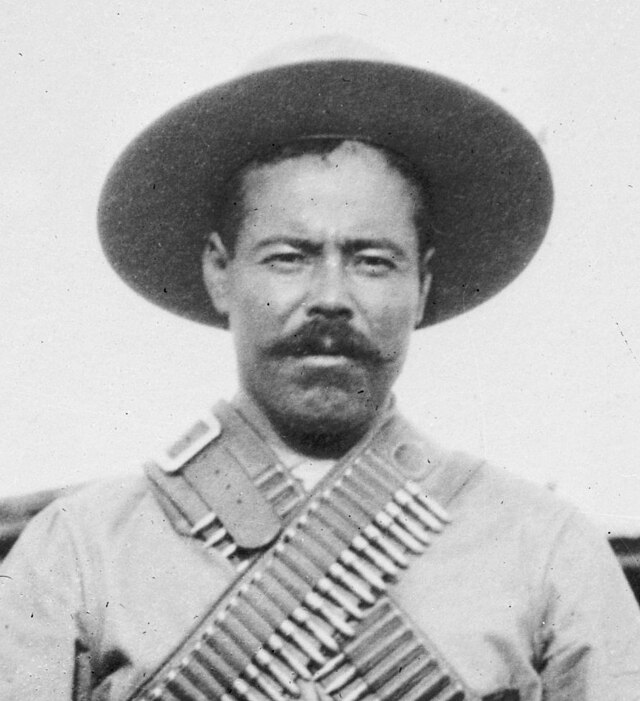
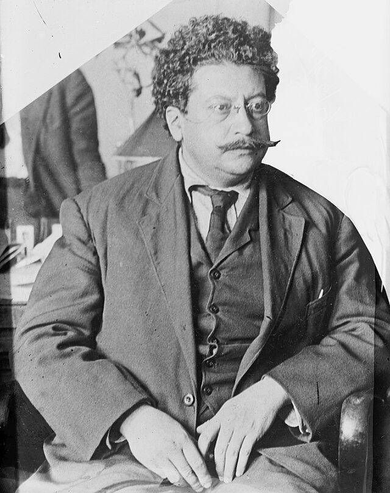
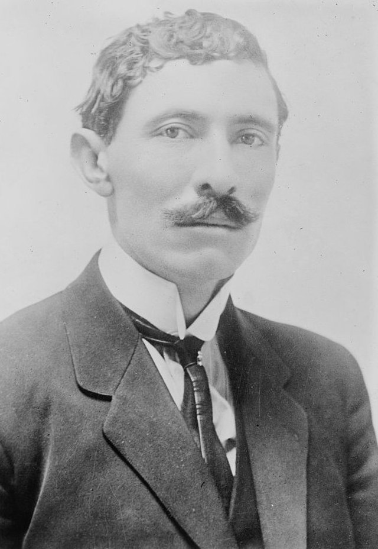

⟵
Personajes clave de la Revolución
Francisco I. Madero
Emiliano Zapata
Pancho Villa

Venustiano Carranza
Álvaro Obregón
Victoriano Huerta
Ricardo Flores Magón

Felipe Ángeles
Pascual Orozco

Hermila Galindo